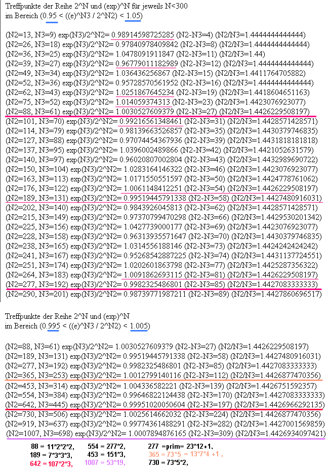

Universal-Scaling mit Eichung
Wenn ein klangfähiges Objekt der Baugröße (Y^N) N mal fraktal
in sich faltbar ist, dann hat das Grundgitter die Größe Y . Gehen
wir von einer Grundwelle aus, könnte man gleich zwei Halbwellen
betrachten und Y=2*X setzen, dann hätte man alle interessanten
Varianten geprüft. In der logarithmischen Abbildung zeigt sich
der Faltungsvorgang als linearer Wiederholvorgang in gleichen
Schritten wie bei der einfachen Schwingungsabfolge, N mal fortlaufend
(bei ungeraden N mit einer gleichgerichteten Grundschwingung).
In (X/2)^Nj kann nun eingesetzt werden Nj=2,3,4,5,6,7.. . Das
sind alle ganzzahligen Faltungsmöglichkeiten einer Halbwelle
hier die Listen von 2^Ni=(4/2)^Ni mit
(3/2)^Nj
(5/2)^Nj
(6/2)^Nj
--> 3^12 = 2^19 --> 3^24 = 2^38
(7/2)^Nj
(9/2)^Nj
zusammengestellt.
Ergebnis:
Zusammenstellung für gemeinsame Kreuzung von 3 Faltungen:
(3/2)^65 = ca. 2^38 Verhältnis: 1.01576
(6/2)^24 = ca. 2^38 Verhältnis: 1.02747 schlechter
(7/2)^21 = ca. 2^38 Verhältnis: 0.968922 schlechter
Trifft bei Doppelstrukturen mit hinein in 2^38:
(5/2)^28 = ca. 2^37 Verhältnis: 1.009742
Zusammenstellung für paarweise Kreuzung (genaueste Treffer):
(3/2)^53 = ca. 2^31 Verhältnis: 1.00209031
(3/2)^94 = ca. 2^55 Verhältnis: 0.99066903
(3/2)^106 = ca. 2^62 Verhältnis: 1.00418499
(3/2)^147 = ca. 2^86 Verhältnis: 0.99273984
(5/2)^28 = ca. 2^37 Verhältnis: 1.00974195
(5/2)^59 = ca. 2^78 Verhältnis: 0.99568244
(5/2)^115 = ca. 2^87 Verhältnis: 1.00538234
(5/2)^118 = ca. 2^156 Verhältnis: 0.99138353
(5/2)^193 = ca. 2^146 Verhältnis: 1.00104154
(6/2)^12 = ca. 2^19 Verhältnis: 1.01364326
(6/2)^38 = ca. 2^24 Verhältnis: 1.02747266
(6/2)^53 = ca. 2^84 Verhältnis: 1.00209031
(6/2)^106 = ca. 2^168 Verhältnis: 1.004184997
(7/2)^26 = ca. 2^47 Verhältnis: 0.99393814
(7/2)^83 = ca. 2^150 Verhältnis: 1.00727564
(7/2)^109 = ca. 2^197 Verhältnis: 1.00116967
(8/2)^N = 4^N = 2^(M) mit M=2*N, -->M gerade
(9/2)^6 = ca. 2^13 Verhältnis: 1.013643264
(9/2)^47 = ca. 2^102 Verhältnis: 0.990669037
(9/2)^53 = ca. 2^115 Verhältnis: 1.004184997
(9/2)^100 = ca. 2^217 Verhältnis: 0.994814984
Alle diese Größen könnten sich in Skalenverhältnissen widerspiegeln,
die wir in der Natur finden. Um aber eine "Eichung" zu finden,
braucht man eine resonante Größe, die experimentell ermittelt
wurde.
Glücklicherweise gibt es auch schon eine (weithin noch unbekannte)
Resonanzgleichung, die eigentlich damit auf den Prüfstand kommt.
Die absoluten Abweichungen sollte man nach der Skalierung genau
untersuchen und man wird mit hoher Wahrscheinlichkeit auf natürliche
"Baugrößen" (Atome, Biomasse, Planeten, Sonnen, Galaxien) und
weitere Resonanzzeiten/längen kommen, die im Abstand der Treffer
(wie 2^38 bzw. 2^(-38)=3.6379788E-12 ) auftreten.
Schnittpunkte
2^N mit exp(N)
kleine Zahlen: aller 13 Zweier-Potenzen bzw. aller 9 exp-Potenzen.
Damit ist nur jeder 3.Treffer der GlobalScaling-Resonanz (siehe
Hartmut Müller, wächst mit exp(3N) ) innerhalb einer
5%igen Genauigkeit mit einer Oktavresonanz austauschbar.
Hinweis: 2^13 = exp(9) = (9/2)^6 in
guter Näherung / Interessant:
(1.618034)^13 = 2^9
--> 2^38 = 1/2*exp(27) = 3^24 = (3/2)^65 = 2*(5/2)^28

Schnittpunkte
3^N mit exp(N) 3^11
= exp(10)
Schnittpunkte
(3/2)^N mit exp(N) (3/2)^37
= exp(15)
Synchronzeiten, Frequenzen und Resonanzlängen:
T = (Z*Ce*2^N)/c
f = c/(Z*Ce*2^N)
L = Z*Ce*2^N
mit c=Lichtgeschwindigkeit, Z=Kernladungszahl, Ce=Comptonwellenlänge,
N=ganze Zahl
JavaScripte für alle möglichen Listen:
http://www.aladin24.de/htm/elementarresonanz.htm
( alte Methode:
jeweils als Applet (Formular ganz öffnen!) verwendbar
für Resonanz-Zeit
(Nanosekunden: min=1, Std=1, sek=0.000000001 eintragen)
für Resonanz-Frequenz
für Resonanz-Länge
)
Z=6 N=38 T=13.347 ns f=74.92 MHz L= 4.0013 m Kohlenstoff
Z=7 N=38 T=15.571 ns f=64.22 MHz L= 4.6681 m Stickstoff
Z=8 N=38 T=17.796 ns f=56.19 MHz L= 5.3350 m Sauerstoff
Z=9 N=38 T=20.020 ns f=49.95 MHz L= 6.0019 m OH- oder Fluor
Z=10 N=38 T=22.245 ns f=44.95 MHz L= 6.6688 m H2O oder
Neon
Z=14 N=38 T=31.142 ns f=32.11 MHz L= 9.3363 m Silizium
Z=18 N=38 T=40.041 ns f=24.97 MHz L=12.0039 m Masse H2O
oder Argon
Z=26 N=38 T=57.837 ns f=17.29 MHz L=17.3390 m Eisen
Z=29 N=38 T=64.510 ns f=15.50 MHz L=19.3396 m Kupfer
Z=6 N=37 T= 6.673 ns f=149.85 MHz L= 2.0006 m Kohlenstoff
Z=7 N=37 T= 7.786 ns f=128.44 MHz L= 2.3341 m Stickstoff
Z=8 N=37 T= 8.898 ns f=112.38 MHz L= 2.6675 m Sauerstoff
Z=9 N=37 T=10.010 ns f= 99.90 MHz L= 3.0009 m OH- oder Fluor
Z=10 N=37 T=11.122 ns f= 89.91 MHz L= 3.3344 m H2O oder Neon
Z=14 N=37 T=15.571 ns f= 64.22 MHz L= 4.6682 m Silizium
Z=18 N=37 T=20.020 ns f= 49.95 MHz L= 6.0019 m Masse H2O
Z=26 N=37 T=28.918 ns f= 34.58 MHz L= 8.6695 m Eisen
Z=29 N=37 T=32.255 ns f= 31.00 MHz L= 9.6698 m Kupfer
Z=6 N=61 T= 0.112 s f=8.932 Hz L= 3.356 E7 m Kohlenstoff
Z=7 N=61 T= 0.130 s f=7.656 Hz L= 3.916 E7 m Stickstoff
Z=8 N=61 T= 0.149 s f=6.699 Hz L= 4.475 E7 m Sauerstoff
Z=9 N=61 T= 0.168 s f=5.954 Hz L= 5.035 E7 m OH-
Z=10 N=61 T= 0.187 s f=5.359 Hz L= 5.594 E7 m H2O
Z=14 N=61 T= 0.261 s f=3.827 Hz L= 7.832 E7 m Silizium
Z=18 N=61 T= 0.336 s f=2.977 Hz L= 1.0069 E8 m Masse H2O
Z=26 N=61 T= 0.485 s f=2.061 Hz L= 1.4545 E8 m Eisen
Z=29 N=61 T= 0.485 s f=1.848 Hz L= 1.6223 E8 m Kupfer
Z=6 N=30 T= 52.136 E-12 s f=19.180 GHz L= 15.630 mm Kohlenstoff
Z=7 N=30 T= 60.826 E-12 s f=16.440 GHz L= 18.235 mm Stickstoff
Z=8 N=30 T= 69.515 E-12 s f=14.385 GHz L= 20.840 mm Sauerstoff
Z=9 N=30 T= 78.204 E-12 s f=12.787 GHz L= 23.445 mm OH-
Z=10 N=30 T= 86.894 E-12 s f=11.508 GHz L= 26.050 mm H2O
Z=14 N=30 T=121.651 E-12 s f= 8.220 GHz L= 36.470 mm Silizium
Z=18 N=30 T=156.409 E-12 s f= 6.393 GHz L= 46.890 mm Masse
H2O
Z=26 N=30 T=225.924 E-12 s f= 4.426 GHz L= 67.730 mm Eisen
Z=29 N=30 T=225.924 E-12 s f= 3.968 GHz L= 75.545 mm Kupfer
An der Abweichung von Faktor 2 sieht man, daß die Müller-Gleichung
möglicherweise mit 1/2 multipliziert werden muß (Korrektur der
Gleichung im Endeffekt), damit der Treffer oben N=62 auf den experimentellen
Wert bei N=61 im unteren Hertz-Bereich paßt. Deshalb wurde auch
weiter für N=30 statt für N=31 (Treffer oben) für die Resonanzen
im GigaHertz-Bereich gerechnet.
Die Resonanzen im MegaHertz-Bereich N=37 passen ungefähr zu den
benutzten Diodenschaltzeiten.